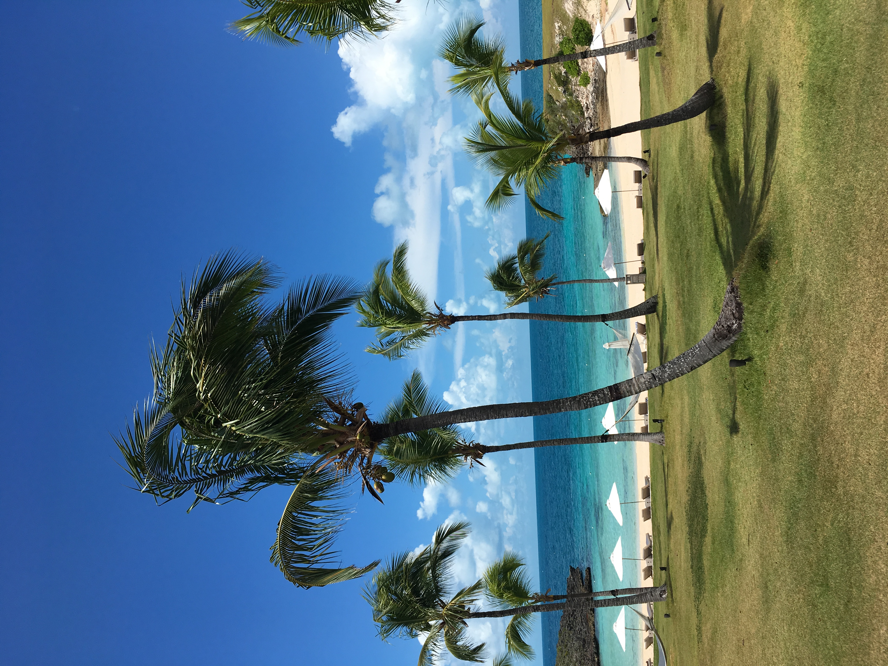
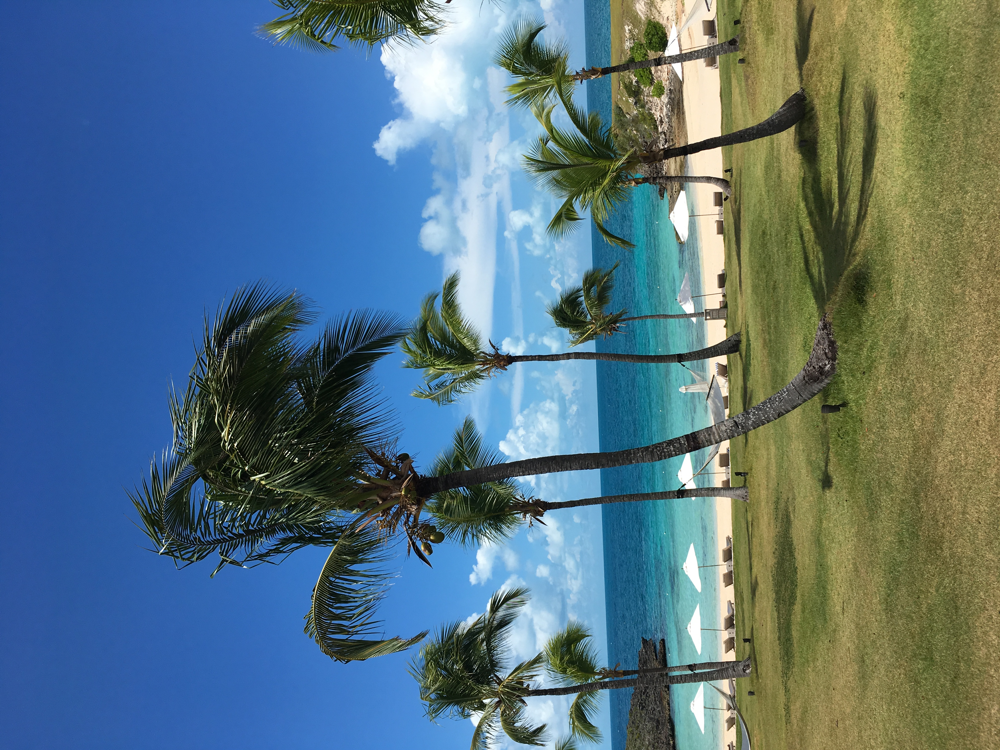

Portfolio



Hello everybody ! My name is Beatrice Barbieri and I am a biology student at The University of California - Riverside. My biggest passions are medicine, neuroscience and mathematics. I am planning on pursuing a minor in applied math starting from next year. I come from a small town close to Bologna, Italy. From a young age, I’ve dreamed of going into the medical field - an interesting fact, my last name means “barber-surgeon.” I began my medical journey at age 15 in high school, when I took part in the “Biomedical Path” studying Biology, Anatomy, and Chemistry. My enormous curiosity about science and medicine is constantly evolving and deepening. When I was 16, I decided to participate in a study-abroad exchange and finish high school in the United States. Boston became my new home and I spent a wonderful year staying with my host mom Julie and her dog Daisy in Arlington, meeting new people and making amazing friends. I am a lover of the East coast and the rainy, gloomy weather. I decided to major in biology because I will have to go to medical school in order to become a physician and I thought that biology was the best match for me since it has all the necessary requirements that a student needs in order to apply. One of my biggest passions is running. In October 2023 I ran my first half marathon. No one would describe me as an athlete but I wanted to commit to running because I knew I could start right away. Preparing for this half marathon showed me that I like running and am passionate about the sport, and that I could actually achieve the goals I set for myself. This experience made me feel more confident in my abilities and my sense of self-reliance. I am capable of setting goals for myself that I can achieve if I want to, and that nothing is too difficult or hard for me.
As I have continued running, I have experienced more benefits than I initially thought. During the actual run, both mentally and physically, running is always a struggle for me, but the feeling after it is one of the greatest I have experienced. After I run I always feel good about myself. It is a great way to keep me motivated and determined: each time I run I try to set new goals, including longer distances or a faster pace. Lastly, it provides me with the opportunity to stay in touch with nature and the outdoors. I love nature, I grew up surrounded by trees, meadows and flowers so having nature around me is necessary to me and very therapeutic. I hope I will be able to run many more half marathons over the years. My goal right now is a marathon but I would love to climb one of the highest summits of the world and complete Iron Man. I love tennis too and my favorite player is Roger Federer from Basel, in Switzerland.
Enter bio here
Enter bio here
• Member of the pre health club "Project Sunshine"
• Researcher in the medical field about anticancer peptides
• Member of the book club